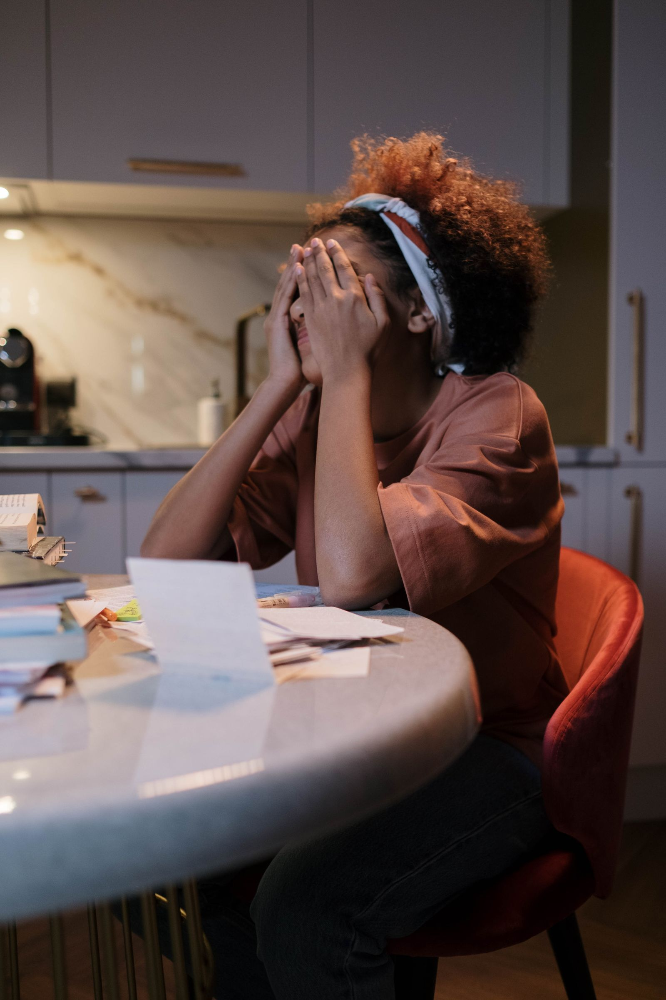
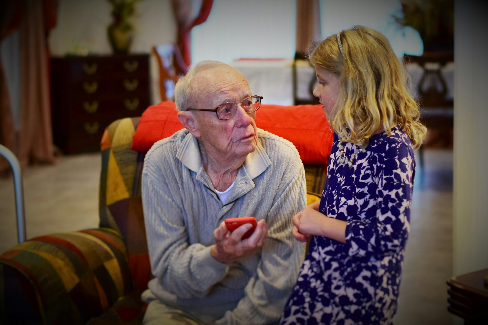
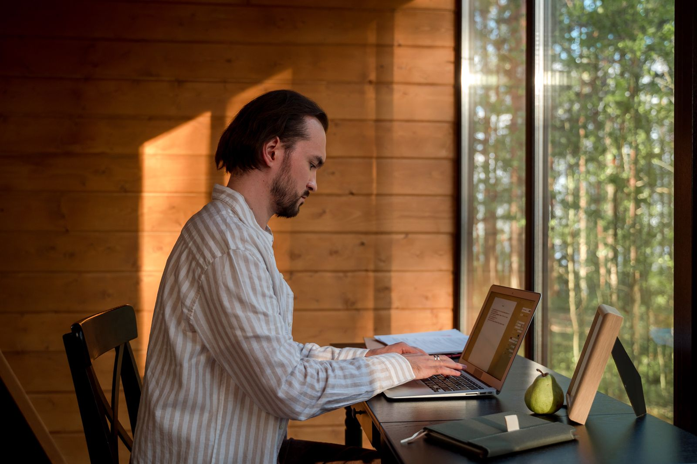

For the people who build public services, and everyone who uses them.
Accessibility is hard. Navigating the web without it is harder.
Somewhere tonight, someone is applying for a school place, a permit, a pension. Tired, in a hurry, in their second language. With a reading difficulty, colours they can't tell apart, reading glasses left in the other room, a screen reader, or one free hand. KvirnUI is the part of your service that makes sure they all get through.
Pre-alpha. The API will change. Testing with assistive technology is pending, and we say so everywhere.

Maja applies at 23:40, after the kids are asleep.
The preschool application closes at midnight. She is tired, she has dyslexia, and the words start to swim. The form has to say what it means and forgive a slip.
So every KvirnUI field keeps its label, its help and its error together, in plain words, one thing at a time. When something is wrong, it says what to do next and takes her straight there. Nothing is lost when she goes back.

Bertil's eyes gave up on small print years ago.
He's 86. His granddaughter is nine. When she visits, they renew his bus pass together: she reads, he decides. He loves that she helps. But she isn't always there, and he would like to manage on his own.
So KvirnUI's text grows when he asks it to, up to four times, with nothing cut off or hidden. The contrast meets the floors in every theme and goes higher with one setting. Every button is big enough to find. Next time, he can do it on a Tuesday afternoon, by himself, and tell her about it on Sunday.
Amal has forty seconds and one free hand.
A night shift, a cracked phone, a thumb, and a queue of things that can't wait. The thing she needs is at the top, and the button is big enough to hit.
So KvirnUI reflows to 320 pixels without sideways scrolling, keeps every target 44 pixels, and follows the text size, contrast and motion she set on her own phone. Her settings win.

Jonas can't tell the red from the green.
One in twelve men can't. Add low sun on the screen and a hurry, and a coloured dot means nothing at all.
So in KvirnUI, status is never colour alone: a word and an icon always come with it. Every colour pair is measured against WCAG floors in all four themes, and the high-contrast ones are a setting away.
Built for the edges.
Better for everyone.
Plain words help the person reading in a second language. A big target helps the thumb on the bus. Good contrast helps everyone over forty-five, and anyone in the sun. A clear error helps the civil servant at the end of a long shift. The keyboard helps the power user who never touches a mouse.
Accessibility isn't a side door for a few. It's the front door, built properly. And everybody walks through it.
Why we build it
Public services are the websites nobody chooses.
You can't take your pension application to a competitor. So it has to work for everyone who turns up, on whatever they turn up with, on the day it matters to them.
Most libraries make that your problem. We made it ours. The invisible parts, the keyboard, the focus, the words a screen reader needs, the plain structure a tired mind needs, the contrast, the target sizes, the six languages, are built in, written down and tested, so your team can spend its time on the service itself.
We are small, and early. The API will change. We haven't yet put the components in front of people who use assistive technology every day, and until we have, every page here says so. That honesty is the product too.
We don't ask you to believe it. We show you.
Every component has a written contract: every role, every key, every announcement. Every key is pressed by a test in a real browser. Every story is checked in four themes. And where nobody has tested with real assistive technology yet, it says pending, in the open, until someone has.
- 56 components
- 6 languages
- 4 themes
- 3 dependencies
- 0 trackers
Open the evidence ledger Read a component's keyboard contract See the roadmap and what is still pending
How to get started
For the developer who will build it. A hook when you want control, a component when you want speed.
A hook when you want control
const disclosure = useDisclosure()
<button {...disclosure.triggerProps}>Show the answer</button>
<div {...disclosure.panelProps}>…</div>A component when you want speed
<Disclosure.Root>
<Disclosure.Trigger>Show the answer</Disclosure.Trigger>
<Disclosure.Panel>…</Disclosure.Panel>
</Disclosure.Root>Headless: zero CSS in the packages, state as data-*, your markup. One opt-in theme you can remove, override or copy. Three runtime dependencies, all from TanStack. Typed by inference. pnpm add @kvirn-ui/react @kvirn-ui/i18n
Talk to us
You decide what your organisation builds with
Tell us about the service and the deadline. We'll tell you plainly what KvirnUI does today, what is still pending, and what a licence covers. No forms, no mailing list: one email, answered by the person who builds it.
You build it
Found a gap, a bug, a key that doesn't do what the contract says? That's the most useful email we get. Or read the source first; it's all public.
The licence in plain words
Free for personal use. Any other use needs a commercial licence, which also covers support. The code is published under the AGPL-3.0, so it stays readable by any auditor and available whatever happens to us.